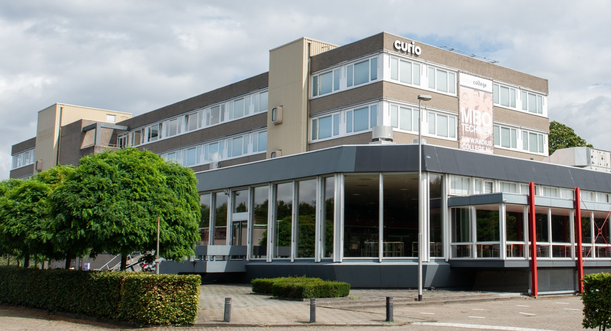

Overige Informatie
Locatie
De curio locatie van deze school is Curio, Terheijdenseweg 350
infopunt@curio.nl
088-2098000
Na je opleiding kun je als software devoloper aan de slag bij:
1. ICT- bedrijven
2. Development-bureau’s
3. Software development-bedrijven
4. Software consultancy-ondernemingen
Overzicht
Dit is het overzicht van de opleiding

Er is ook een mogelijk om te versnellen, kijk de afbeelding hier boven
Op deze opleiding bij Curio is er een mogelijkheid om de opleiding versneld af te ronden. Dit betekent Dat je in 3 jaar klaar bent i.p.v. 4 jaar.
Tijdens het versnellen ga je wat sneller door de stof heen. Ook sla je blok E over, en worden blok F en blok G samen gevoegd tot 1 jaar.